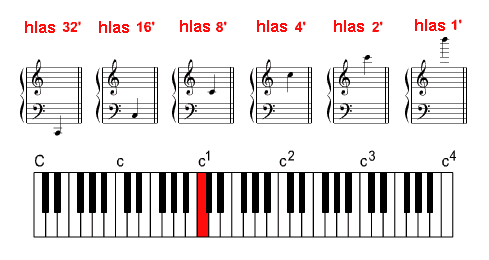

Základní hlasy jsou ty hlasy (rejstøíky), u kterıch se po stisku klávesy ozve tón stejného názvu, jakı pøísluší klávese (názvem teï rozumíme písmeno tónu bez dalšího urèení, z které oktávy tento tón je). Napø. po stisknutí klávesy jednoèárkovaného c1 na klaviatuøe se v základním hlase ozve také „c“, v závislosti na poloze základního hlasu však mù�e jít o „c“ z rùznıch oktáv. V oznaèení stopové délky základního hlasu najdeme v�dy nìkteré èíslo z øady 32’, 16’, 8’, 4’, 2’, 1’ (jejich vıznam bude popsán dále). Jen jeden z tìchto hlasù je netransponující – 8’, ostatní transponují nahoru èi dolù o interval oktávy (násobku oktáv). U osmistopového hlasu se po stisku klávesy c1 ozve píš�ala na tónu c1: |
Nástrojem vydávanı zvuk se tedy v názvu pøesnì shoduje se stisknutou klávesou na klaviatuøe. Ostatní hlasy u� jsou transponující. První z nich je hlas šestnáctistopovı – 16’, transponující zvuk o oktávu dolù (má dvojnásobnì delší píš�aly, ne� hlas v základní osmistopové poloze, zní tedy na polovièní frekvenci). Po zapnutí takového rejstøíku a stisku klávesy c1 na klaviatuøe se ozve píš�ala o oktávu ní�e, tj. na tónu malé c: |

Budeme-li postupovat po klaviatuøe smìrem dolù, dojdeme a� na klávesu velkého C, na které v tomto rejstøíku bude znít tón kontra C (C1). Ilustrace v tìchto kapitolách se sna�í zachytit vztah polohy rejstøíku, stisknuté klávesy a znìjícího tónu. Zelená píš�ala názornì naznaèuje vıšku znìjícího tónu svım umístìním vùèi klaviatuøe, neznamená to ale, �e v nástroji „le�í“ nad jinou ne� hranou klávesou! Ve zde uvedenıch pøíkladech je sice znázornìna jen situace pøi stisknuté klávese c1, u všech dalších kláves však bude dìj analogickı, znít bude tón ve stejném intervalu vùèi stisknuté klávese, jako je na pøíkladu. Tak�e napø. u uvedeného 16’ hlasu po stisku malého d zazní velké D, po stisku dvojèárkovaného fis2 zazní jednoèárkované fis1 atd. Dalším dolù transponujícím hlasem v øadì základních hlasù je hlas tøicetidvoustopovı
32‘. U nìj se po stisku klávesy c1
ozve velké C – tedy tón o dvì oktávy ní�e: |

Analogicky pøedchozím pøípadùm – po stisku velkého C se ozve subkontra C (C2) a opaènì – po stisku nejvyšího c4 se ozve c2. Tento hlas tedy nemá malé píš�aly dvou nejvyšších oktáv, zato ale má oproti osmistopovému hlasu navíc velké píš�aly dvou spodních oktáv. Ovládán je však stále stejnou klaviaturou. Tøicetidvoustopovı hlas je zajímavı ještì z jednoho hlediska – je to nejvìtší (a nejhloubìji znìjící) varhanní hlas vùbec. Frekvence tónu subkontra C je 16 Hz, co� je dolní frekvenèní práh slyšitelnosti (viz vlastnosti sluchu v kapitole o akustice). Vìtšina lidí u� zvuk této píš�aly není schopna vnímat sluchem, ale spíše hmatem (vibrací tìla èi bránice). |
Opaènım smìrem od základní polohy transponují hlasy
se stopovou délkou menší ne� 8’. Prvním z nich je ètyøstopovı
4’ hlas, transponující zvuk o oktávu vıše. Po stisku c1
se tedy u tohoto hlasu ozve tón c2: |

Jedná se opìt o základní hlas (transponuje o interval oktávy), celá øada píš�al tónù klaviatury C a� c4 bude znít na tónech c a� c5. Chybí tedy píš�aly nejspodnìjší „velké“ oktávy a naopak horní oktáva je o oktávu vıše nad rozsah klaviatury. Obdobnì je tomu u dvoustopového hlasu 2’, kterı transponuje analogicky o dvì oktávy nahoru: |

| a hlasu jednostopového 1', transponujícího nahoru o tøi oktávy: |

Pøipomeòme si, �e znaèení 1’ znamená, �e nejvìtší píš�ala (patøící velkému C na klaviatuøe) má u tohoto rejstøíku délku jedné stopy (tedy okolo 30cm). Nejvyšší tón (na klávese c4) zní na tónu c7, kterı má frekvenci cca 16,4 kHz – co� je horní frekvenèní mez slyšitelnosti. Rejstøíky ve vyšší poloze (pod 1’) délky tedy nemají z hlediska slyšitelnosti vıznam (obdobnì jako 16’ na dolním konci frekvenèního spektra). Následující obrázek shrnuje všechny hlavní hlasy zobrazením znìjícího tónu pøi stisknuté klávese c1 v notové osnovì: |

Pro názornost jsou základní hlasy pøedstaveny ještì
na následující animaci, která ukazuje princip transponování jednotlivıch
poloh na celistvé øadì píš�al v rozsahu deseti oktáv (od C2
do c7) a jejich vztah ke klaviatuøe.
Animace se otevøe po kliknutí na náhled v novém oknì: |
Ve skuteènıch varhanách bude pøíslušnı rejstøík tvoøen
v�dy jen zvıraznìnou èástí øady píš�al (pokud nebudeme brát v úvahu mo�nou
pøítomnost superspojek èi subspojek – viz spojky v úvodu ke trakturám,
které by vy�adovaly pøidání píš�al pro jednu oktávu nad èi pod rozsah
a repetice, ty jsou podrobnì popsány v kapitole o smíšenıch hlasech).
Analogickı „vıbìr“ píš�al z øady o rozsahu vìtším ne� má klaviatura se
pou�ívá u multiplexních varhan UNIT. |
V dalších kapitolách je rozebráno oznaèování vedlejších a smíšenıch hlasù. S problematikou souvisí rovnì� úvod do akustiky, princip vzniku zvuku v píš�alách retnıch a jazıèkovıch, stavba píš�al, menzury, intonace a ladìní. |
Poznámka: Tato stránka je souèástí Anatomie varhan ®, © Ing. Petr Bernat. Animace © Konrad Zacharski